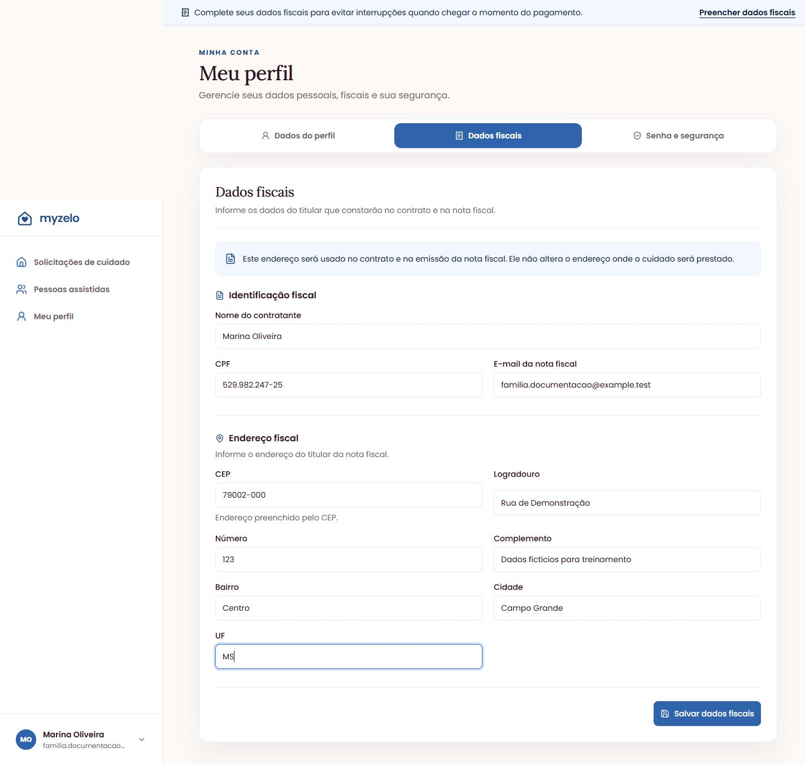
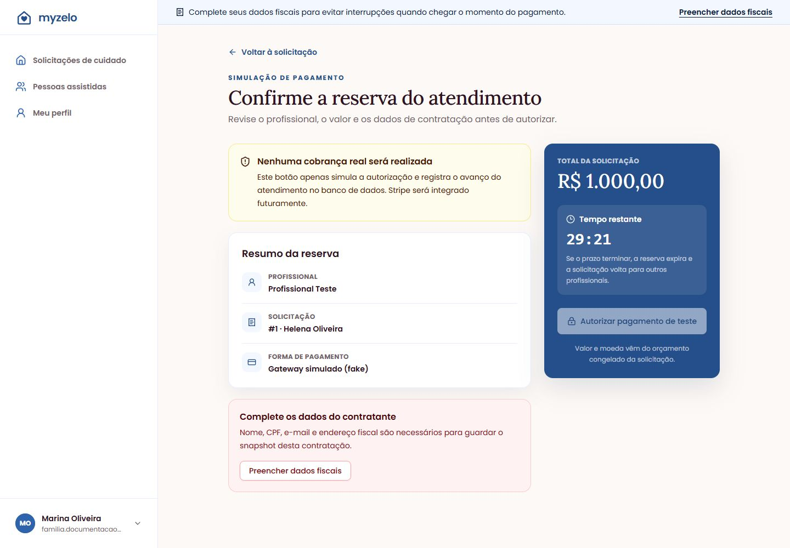

Cadastros
Preencher dados fiscais
Prepare os dados do contratante para não interromper a autorização do pagamento de teste.
Cadastrar o contratante
- Abra Meu perfil e escolha a aba Dados fiscais. Você também pode usar Preencher dados fiscais em um aviso de pendência.
- Em Identificação fiscal, informe Nome do contratante, CPF e E-mail da nota fiscal.
- Em Endereço fiscal, preencha CEP, Logradouro, Número, Complemento quando houver, Bairro, Cidade e UF. Confira qualquer dado preenchido pela consulta do CEP.
- Clique em Salvar dados fiscais. O sistema informa “Dados fiscais atualizados.”
- Volte a Solicitações de cuidado, abra a solicitação reservada e retome Simular pagamento.


Quando faltam dados fiscais
Na reserva, a tela de pagamento mostra Complete os dados do contratante e oferece Preencher dados fiscais. A autorização não fica disponível enquanto os dados necessários não estiverem completos.


Resultado esperado
Os dados fiscais ficam salvos e a pendência deixa de bloquear o pagamento de teste.
Regras que você precisa conhecer
- O CPF é validado; sequências inválidas não são aceitas.
- O e-mail da nota fiscal pode ser diferente do e-mail usado para entrar.
- O endereço fiscal não altera o endereço do atendimento.
- Nesta versão, o cadastro fiscal não significa emissão automática de nota fiscal.